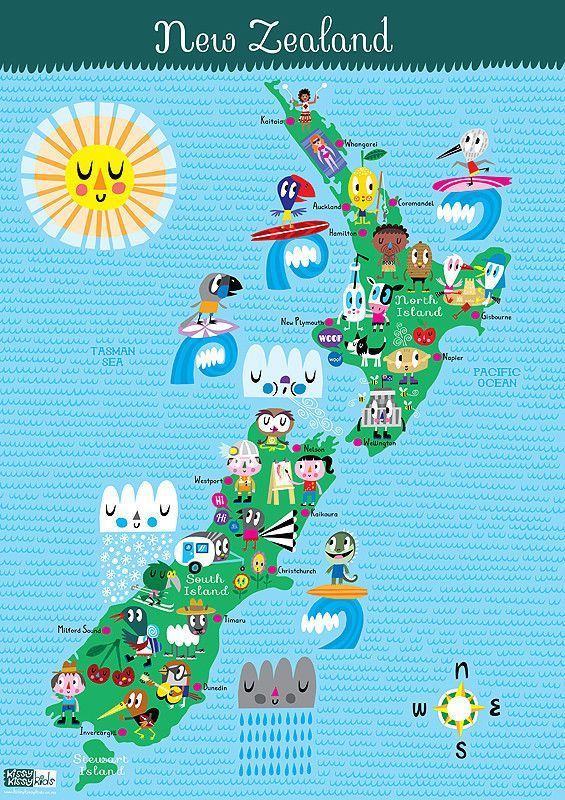

Across New Zealand, you can find everything from untamed wilderness to rich culture. From towering mountains and mist-cloaked fjords, you can find serenity in golden beaches curled around quiet bays. Make new friends in small towns with big doses of laid-back charm.
LOTR fans and their companions are welcome on this off-road adventure. Depart Queenstown aboard a 4WD vehicle for the rugged roads of the Wakatipu Basin. In addition to panning for gold alongside the Arrow River, your guide will help you discover a variety of filming locations for “The Lord of the Rings.
One of the easiest and most spectacular ways of seeing Mount Cook is from the air. On this combined ski plane and helicopter tour you’ll get to see things that you couldn't any other way, such as lakes, glaciers, and hidden parts of Mount Cook. You’ll travel in one type of vehicle on the way up, and the other on the way down, for an exciting and varied experience.
Upcoming Links
NewsFeed
How much does a trip to New Zealand cost?
| Price | |
|---|---|
| Ticket from JFK | $1100 |
| Hotel for 2 per night | $150 |
| Food per person per day | $80 |
| Attractions and Activities per person | $200 |
| Total Cost per day per person | $430 |
2022 @Project 1 by Bode Chiu